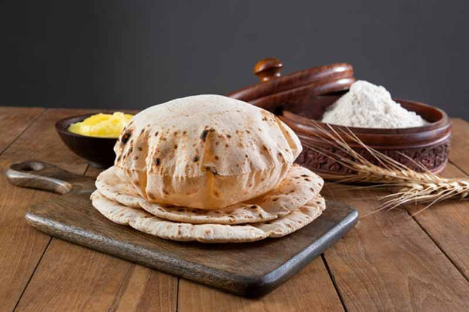

Roti-Simple Indian FlatBread

Roti is a type of round, unleavened flatbread that originated in the Indian subcontinent. It's a staple food in many South Asian, Southeast Asian, Caribbean, East African, and Southeast African countries.
Ingredients:
- 250 gram of Wheat Flour
- 250 ml of Water
- 1 Flat Circular Rolling Board
- 1 Rolling Pin
- 1 Flatbread Pan/Griddle
- 1 Large Flat, Wide Plate
Instructions:
- Pour the Wheat Flour in the Plate and make it mountain-like in plate and make hole in middle
- Add little Water in that hole in a way to fill it but not pour water around the flour and mix it well in whole floor
- If it's hard,add little Water accordingly or just make it complete soft dough(not too hard if it is just add very litthle water and not too soft if it is just add flour to balance it )
- After making dough, sprinkle Water in Plate and grind the dough to make it soft
- Put the Griddle in medium flame and take your Rolling Pin and Rolling Board
- Take small ball-like piece from dough and make it curvier slightly flat piece by rotating it between your palm
- Dip that piece in the flour to make it non-sticky, put that piece on ypur Rolling Board and get ready with your Rolling Pin
- Lightly roll your Rolling Pin on the curvier slightly flat piece on one side in a way that tht piece started revolving in circular way till it seems slightly smaller size than Rolling Board and if it feel sticky in between, just dip it in Floor, continue making it like Flatbread
- Put that raw flatbread in Griddle and just cooked the one side for 30 second and turned it around to let it cooked on other side
- Continue revolving that flatbread to make it cooked properly fron everywhere on other side
- After properly cooking other side, turned it around last time to make it puffed with handkercheif/flatbread pressing on it from everywhere on it while revolve it in griddle in same place(flatbread doesn't burn if it revolve instead staying like that where there is chance of burn)
- Remove it from griddle, make other Roti like guided in instructions and your simple Flatbread is Ready to Serve and Eat! with Bhaaji, Dal and Bhaat
Enjoy Your Roti with other "Desi-Khana"